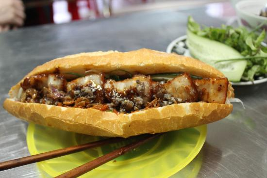

Vegetable Banh Mi

Description
Vegetable Banh Mi This vegetable banh mi for two stars quick-pickled vegetables and portobello mushrooms sauteed with fish sauce, sriracha, and five-spice.
If you omit the fish sauce it's vegetarian.
Ingredients
- ½ cup rolled oats
- ½ pound ground pork
- ½ cup rolled oats
- 1 slice bread, shredded
- 1 large egg
- ¼ small onion, diced
- 1 stalk green onion, sliced
- 3 tablespoons dry onion soup mix
- 2 tablespoons chopped fresh basil
- 1 tablespoon soy sauce
- 1 tablespoon minced fresh ginger root
- ½ tablespoon sesame oil
- 1 (15 ounce) package slider-size burger buns
Steps
- Gently mix beef, pork, oats, bread, egg, onion, green onion, soup mix, basil, soy sauce, ginger, and sesame oil together.
Form 10 slider-sized patties.
- Heat a frying pan over medium-high heat.
Add patties and pan-fry until meat is browned and no longer pink in the centers, flipping as needed, 5 to 7 minutes.
- While patties fry, toast slider buns in a toaster until lightly browned, 30 seconds to 1 minute each.
- Add patties to toasted buns and serve.